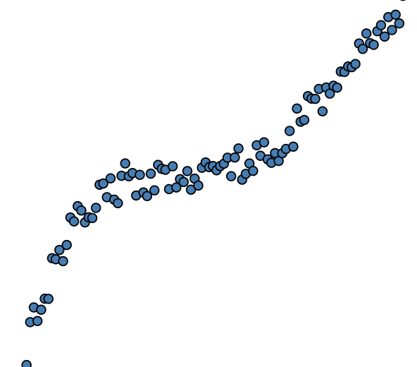
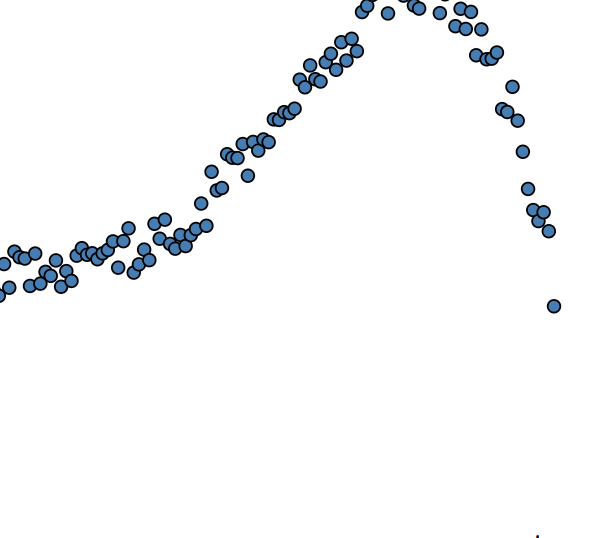
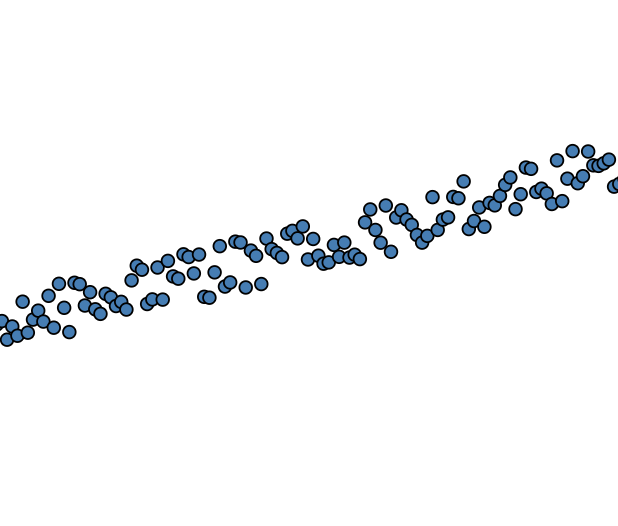

Choose a function, try different values of p and see how you do on generalization error!
DATASET
Which dataset you want to use?



Concentration (200)
Amount of data to sample?
Noise (200)
How much noise?
POLYNOMIAL DEGREE (2)
What degree basis you want to fit?
The scatter plot at the top represent one instance of sampled data and regression line which fits it.
The plots on the right (box and bar) is constructed by repeatedly sampling data and fitting regression lines. The box plot on the top-right shows the distribution of residuals. The bar chart on the right represent the bias and variance of residuals. Each bar/ box corresponds to a particular degree of regression line (shown on x-axis).
Steps:
Choose a dataset from the pane on the left.
Analyze bias-variance tradeoff by changing data/ noise/ samples.
Investiage different fits by changing degree of polynomial.
Use the zoom-out symbol to see generalizability of your model